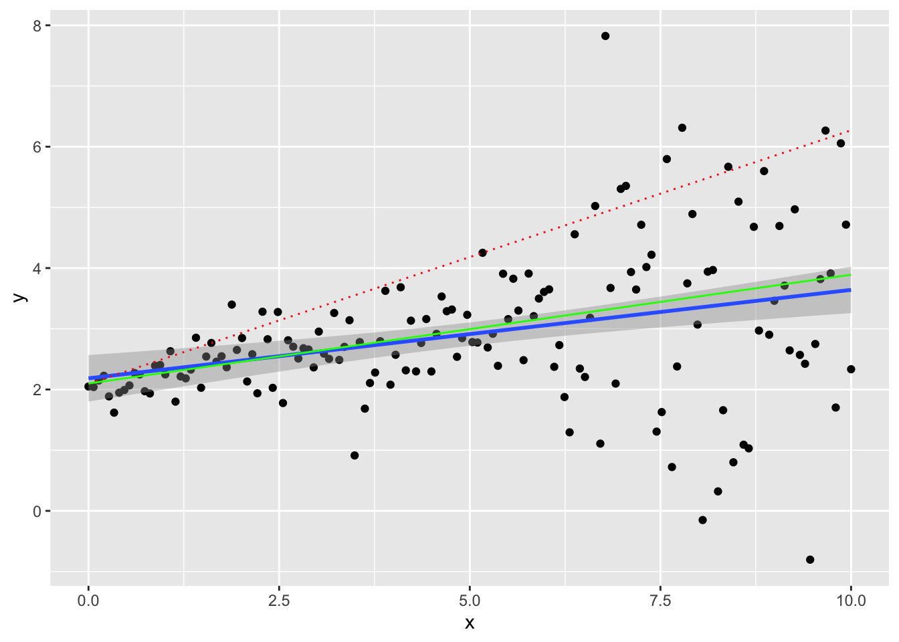
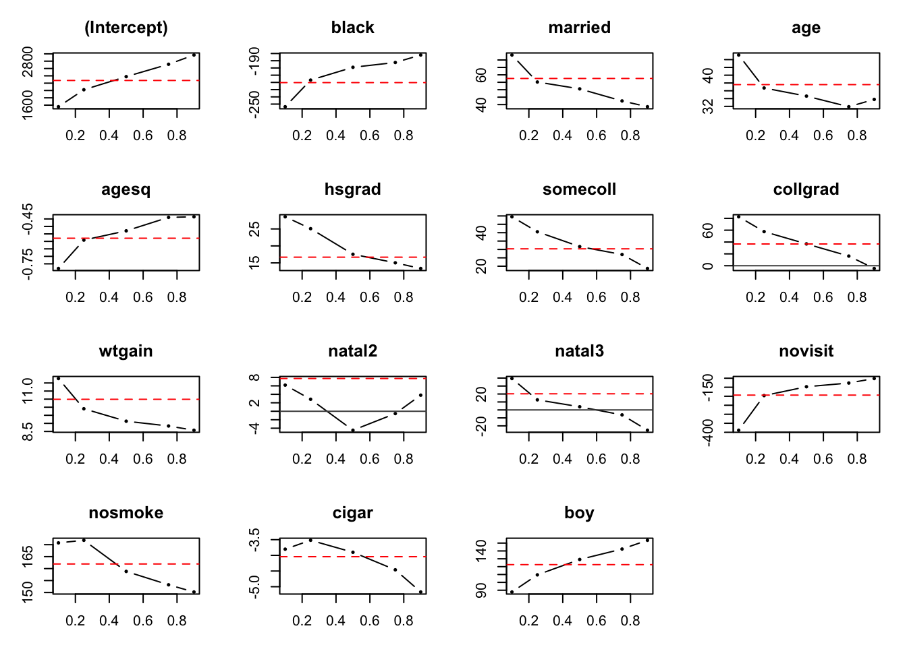
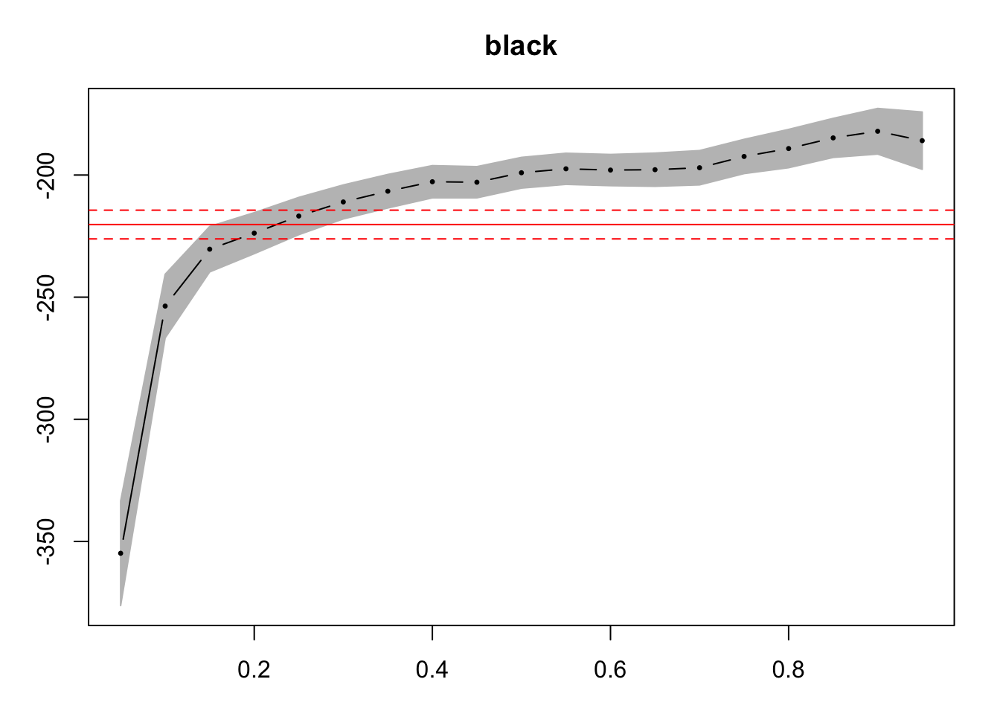

Chapter 2 Session I - Quantile regression
2.1 Objective
This first class is to introduce your to using R for implementing quantile regressions. Therefore, we are going to:
- Understand the mathematical procedure behind the QR estmation and its computation (both for the estimates and for the the standard errors). This will help understanding the interpretation of the results obtained when applying the procedure in other contexts.
Reproduce a paper’s tables and results using quantile regression
a) Import the data b) Clean the data c) Reproduce the summary statistics table d) reproduce the regressions tables- Interpret the results
Ways to communicate the results (plotting in R)
In the last part of the lecture I will just mention and make reference to other classes of QR estimators so you can investigate more on them;
2.2 Quantile Regression
For a summary on what is the intuition and objective of quantile regression check the article “Quantile Regression” (Koenker and Hallock 2001).
QR is a method that allows you to analyse the relation between \(x\) and \(y\) across the \(y\) distribution. It is useful when the researcher thinks there are heterogeneous effects at different values of the indipendent variable. It is important to remark that the heterogeneity is on the outcome \(y\). Also, it is widely used in presence of outliers and extreme events (infinite variance), for OLS is inconsistent in such cases while the median is always defined and consistent. For quantiles other than \(\tau = 0.5\) the estimation is robust, too.
From the class we know the relationship between the definition of the estimator, the risk function used in the optimization (in the case of the lector the ‘LAD function’, when \(\tau = 0.5\)) and that we need to solve numerically the optimization program in order to identify the parameters of interest. Accordingly, we will explain how the algorithm works and we are going to perform the numerical optimization by hand from the simplest case to more complex problems.
2.2.1 Geometric interpretation
From (Koenker and Hallock 2001):
Quantiles seem inseparably linked to the operations of ordering and sorting the sample observations that are usually used to define them. So it comes as a mild surprise to observe that we can define the quantiles through a simple alternative expedient as an optimization problem. Just as we can define the sample mean as the solution to the problem of minimizing a sum of squared residuals, we can define the median as the solution to the problem of minimizing a sum of absolute residuals. The symmetry of the piecewise linear absolute value function implies that the minimization of the sum of absolute residuals must equate the number of positive and negative residuals, thus assuring that there are the same number of observations above and below the median. What about the other quantiles? Since the symmetry of the absolute value yields the median, perhaps minimizing a sum of asymmetrically weighted absolute residuals—simply giving differing weights to positive and negative residuals—would yield the quantiles. This is indeed the case.
The slope of the coefficient is dividing the error space in two parts according to the desired proportion. It is important to notice that we are considering the error space, we are referring to the conditioning quantile. The difference with the OLS is then clear since the two processes are not comparable. While OLS might provide causal linkages, this is prevented in QR precisely for this reason.
Let’s generate some data to see how the line bisects the error space. Since we are generating random data the first thing is to set a seed so our example is reproducible. Then, we generate variance for our error term (not constant) and set an intercept and define the slope. We set everything in a ‘data.frame’ objecto to plot it using the package ‘ggplot2’(Wickham et al. 2019).
set.seed(464)
npoints <- 150
x <- seq(0,10,length.out = npoints)
sigma <- 0.1 + 0.25*sqrt(x) + ifelse(x>6,1,0)
intercept <- 2
slope <- 0.2
error <- rnorm(npoints,mean = 0, sd = sigma)
y <- intercept + slope*x + error
dat <- data.frame(x,y)Let’s plot our synthetic data. We are going to plot the line crossing the 90th percentile conditioning on \(X\) (dashed red line), the OLS curve (blue line with confidence intervals in grey) and the LAD regression (regression to the median, \(\tau = 0.5\))
ggplot(dat, aes(x,y)) + geom_point() + geom_smooth(method="lm") +
geom_quantile(quantiles = 0.9, colour = 'red', linetype="dotted") +
geom_quantile(quantiles = 0.5, colour = 'green') ## Smoothing formula not specified. Using: y ~ x
## Smoothing formula not specified. Using: y ~ x
We can interpret the causal relationship in quantile regression only under rank invariant condition. This requires that individuals have always the same ranking in the distribution of \(Y(X)\) no matter the \(X\). This is difficult to verify or believe in actual applications, but feasible in theory.
Under the rank invariant condition \(\beta_{\tau}\) can be interpreted as the effect on \(Y\) of an increase of one unit of \(X\) among entities at rank \(\tau\) in the distribution \(Y|X=x\).
2.3 Replication of a paper using quantile regression
We are going to replicate the quantile regression procedure by (Abrevaya 2002). In the paper the author investigates the impact of different demographic characteristics and maternal behaviour on the weight at birth in the United States in 1992 and 1996. Why is this relevant:
- There is a correlation between health problems after birth for underweight chidren
- There might be a relation with labor market participation and educational attaintment later in life
- There are incentives to create specific programs to deal with underweight children; it is important to understand such behaviours
2.3.0.1 Data:
In order to get the data we access the following link. Here you can download the ‘NCHS’ Vital Statistics Natality Birth Data’, which is the data used in the paper. We are using only the 1992 and 1996 waves. To download the data follow this link for the zip CSV file of 1992. One important thing to do when analizing the data is understand your data before the actual analysis. Before you start you take a minute or two to consider:
- What is the data?
- Where does it come from? What is the universe, the population and what is your sample.
- What is the shape, format of your data? Do I have access to a data dictionary?
In this case many of this questions are available in the documentation that is provided [at the following link] (https://www.nber.org/natality/1992/natl1992.pdf) detailing every variable in the dataset. From the documentation we can see the kind of information (a glimpse of the amount of variables) and the data counts (\(4'069'428\) observations). An indicator of the size of the data is the size of the file: the zip file is 156 Mb and the uncompressed version of the CSV 2.07 GB! Even if this does not seem much, consider that all this data is stored in the cache of your RAM memory, and it can easily slow down even recent machines. For this reason it is better to read in only the columns that we are interested in. This requires reading the manual and a prior inspection of a subset of the data, which allows you to know the structure, column types and other properties. The most efficient function to open plain text files is ‘fread’ from the ‘data.table’ package (Dowle and Srinivasan 2019). First let’s investigate the data. The first thing to do is to load the required libraries int the current session:
- ‘data.table’ to open the data
- ‘quantreg’ to perform the quantile regression estimation
- ‘stargazer’ to export the results in latex
- ‘dplyr’ to manipulate the data to create the summary statistics
library(data.table)
library(quantreg)
library(stargazer)
library(dplyr)
library(kableExtra)path_source <- "YOUR PATH GOES HERE"
# for macOS and linux: use / in your path to data
# for Win: rembember to use \\ instead of /data <- fread(path_source, nrows = c(100))
head(data[,c(35:41)])## mage12 mage8 ormoth orracem mraceimp mrace mrace3
## 1: 9 4 0 7 NA 2 3
## 2: 9 4 0 7 NA 2 3
## 3: 8 3 0 7 NA 2 3
## 4: 8 3 0 6 NA 1 1
## 5: 5 2 0 6 NA 1 1
## 6: 9 4 0 6 NA 1 1type_of_data <- data %>% summarise_all(typeof)
type_of_data[35:41]## mage12 mage8 ormoth orracem mraceimp mrace mrace3
## 1 integer integer integer integer logical integer integerNow that we have had a look at the content of the database, let’s import the data and clean it. To import only the relevant variables of the paper we create a list containing all the relevant variables for the estimation. I used the codebook to construct this list. Then we use this list within ‘fread()’ to import solely the desired columns.
desired <- c("birmon","mrace3","dmage","dbirwt","dplural","stnatexp",
"mraceimp","dmarimp","mageimp","cseximp","dmar","meduc6",
"wtgain", "mpre5", "tobacco","cigar", "csex", "plurimp", "restatus")
data <- fread(path_source, select = desired)Following the indications of the paper:
To cut down he sample size, we have decided to use only births occurring in June […] There is no evidence that suggest that the June samplediffers in any meaningful way to the full sample. The sample was further limited to singleton births and mothers who were either white or black, between ages 18 and 45, and residents of the United States. Observations for which there was missing information on any relevant variable were also dropped. Unfortunately, all births occurring in California, Indiana, New York, and South Dakota had to be dropped from the sample since these states either did not asked a question about smoking during pregnancy or did not ask it in a form compatible with NHCS standards…
We need to apply the following filters:
- Remove all obs. in months different than the sixth (June)
- Remove all non white or non black mothers
- Remove all obs. which age is not in [18,45] group
- Remove the non stated weights
- Remove all the obs. from California, New York, Indiana and South Dakota
data <- data[which(data$restatus!=4),]
data <- data[which(data$birmon==6),]
data <- data[which(data$mrace3!=2),]
data <- data[which(data$dmage>17),]
data <- data[which(data$dmage<46),]
data <- data[which(data$dbirwt!=9999),]
data <- data[which(data$dplural==1),]
data <- data[which(!(data$stnatexp %in% c("05","33","34","15","43"))),]Moreover, we remove the missing observations. One particularity of many of the variables of the database is that the missing values are coded, meaning that are not representes by 'NA' but by a code that changes in each variable. We are going to remove also the missing from those variables:
data <- data[which(!(data$plurimp %in% c(1))),]
data <- data[which(!(data$mraceimp %in% c(1))),]
data <- data[which(!(data$dmarimp %in% c(1))),]
data <- data[which(!(data$mageimp %in% c(1))),]
data <- data[which(!(data$cseximp %in% c(1))),]
toKeep <- c("dbirwt", "mrace3","dmar","dmage","meduc6", "wtgain", "mpre5", "tobacco","cigar", "csex")
data <- as.data.frame(data)
data <- data[,toKeep]
data <- data[which(data$dbirwt!=9999),]
data <- data[which(data$wtgain!=99),]
data <- data[which(data$dmage!=99),]
data <- data[which(data$meduc6!=6),]
data <- data[which(data$mpre5!=5),]
data <- data[which(data$tobacco!=9),]
data <- data[which(data$cigar!=99),]
data <- data[which(data$wtgain !=99),]For the categorical variables (i.e. education of the mother), we create dummy variables. We keep the contrast (levels of reference) according to the paper. In this way we will be able to compare the results.
data$black <- ifelse(data$mrace3==3,1,0)
data$married <- ifelse(data$dmar==1,1,0)
data$agesq <- (data$dmage)^2
data$hsgrad <- ifelse(data$meduc6==3,1,0)
data$somecoll <- ifelse(data$meduc6==4,1,0)
data$collgrad <- ifelse(data$meduc6==5,1,0)
data$natal2 <- ifelse(data$mpre5==2,1,0)
data$natal3 <- ifelse(data$mpre5==3,1,0)
data$novisit <- ifelse(data$mpre5==4,1,0)
data$nosmoke <- ifelse(data$tobacco==2,1,0)
data$boy <- ifelse(data$csex==1,1,0)We also relabel variables to match those in the paper:
finalVars <- c("dbirwt","black", "married", "dmage", "agesq", "hsgrad", "somecoll", "collgrad", "wtgain", "natal2", "natal3", "novisit", "nosmoke", "cigar", "boy")
data <- data[, finalVars]
names(data) <- c("birwt","black", "married", "age", "agesq", "hsgrad", "somecoll", "collgrad","wtgain", "natal2", "natal3", "novisit", "nosmoke", "cigar", "boy") Now let’s make a summary table. We are going to use the dplyr package (Wickham et al. 2018) for the data transformation and the stargazer package (Hlavac 2018) to nicely export the results. We construct the columns for all selected variables. To store the results it is convenient to save tables in ( ) format, so you can use them directly form that folder into your paper, or copy the result from them.
desc_stats <- round(as.data.frame(cbind(t(data %>% summarise_all(mean)),t(data %>% summarise_all(sd)))),3)
names(desc_stats) <- c("Mean", "Standard Deviation")stargazer::stargazer(desc_stats,
type=ifelse(knitr::is_latex_output(),"latex","html"),
label=knitr::opts_current$get("label"),
title="Summary Statistics 1992", summary = FALSE, out="./images/summary_table.tex")| Mean | Standard Deviation | |
| birwt | 3,388.683 | 571.511 |
| black | 0.163 | 0.370 |
| married | 0.752 | 0.432 |
| age | 26.960 | 5.434 |
| agesq | 756.389 | 303.877 |
| hsgrad | 0.394 | 0.489 |
| somecoll | 0.232 | 0.422 |
| collgrad | 0.211 | 0.408 |
| wtgain | 30.760 | 12.245 |
| natal2 | 0.158 | 0.365 |
| natal3 | 0.026 | 0.161 |
| novisit | 0.009 | 0.096 |
| nosmoke | 0.830 | 0.376 |
| cigar | 2.139 | 5.737 |
| boy | 0.513 | 0.500 |
Now let’s calculate the quantile regression:
How does the command rq() work? An easy way to access the help file of a command, just put a question mark before it in the console, i.e. if you want to collect information on the mean() function you would type ?mean. For our quantile regression, we are going to use the function rq() from the ‘quantreg’ package.
From the help file we can see that the principal inputs of the function are ‘formula’ (the relationship to evaluate), the ‘tau’ (the vector of quantiles), and the ‘data’, which is a dataframe containing the information. Regarding the data it requires a specific type of object, a ‘data.frame’, and also specifies that if we have factors among our variables, it is important to provide a vector with the contrast levels. We do not have to provide it since we already constructed our dummies for such purpose. We are only missing the formula and the quantile vector.
For the moment we are going to construct the formula:
Y <- "birwt"
X <- paste(names(data[,-1]),collapse = " + ")
formula_qr <- as.formula(paste(Y, " ~ ", X))
formula_qr## birwt ~ black + married + age + agesq + hsgrad + somecoll + collgrad +
## wtgain + natal2 + natal3 + novisit + nosmoke + cigar + boyAnd then we construct the vector of quantiles:
quantiles_table <- c(0.1,0.25,0.5,0.75,0.9)As in the main slides, if the number of observations is not large enough, we can use the simplex method, but given that we have more than a hundred thousand observations we are going to use the ‘Frish-Newton’ interior point method. We specify this option in the command options including the method = "fn" statement. After the calculation we will have an object of class ‘rq’ or ‘rqs’, depending on the number of quantiles specified; this might be relevant since some commands might behave differently if operated over this object. For example, the command summary, that is often used to get the summary statistics of a ‘data.frame’, when applied to a ‘rq’ or ‘rqs’ object returns the summary of the fit of the QR.
quant_reg_res1992 <- rq(formula_qr,tau = quantiles_table, data = data, method = 'fn')
qr_results <- summary.rqs(quant_reg_res1992)
qr_results##
## Call: rq(formula = formula_qr, tau = quantiles_table, data = data,
## method = "fn")
##
## tau: [1] 0.1
##
## Coefficients:
## Value Std. Error t value Pr(>|t|)
## (Intercept) 1556.90509 58.45879 26.63252 0.00000
## black -253.65558 7.91665 -32.04078 0.00000
## married 73.32313 6.55406 11.18744 0.00000
## age 45.17747 4.27348 10.57159 0.00000
## agesq -0.78109 0.07630 -10.23749 0.00000
## hsgrad 28.57972 7.31354 3.90778 0.00009
## somecoll 49.49438 8.22498 6.01757 0.00000
## collgrad 82.64542 8.79916 9.39242 0.00000
## wtgain 11.77551 0.16692 70.54735 0.00000
## natal2 6.17644 6.55496 0.94225 0.34606
## natal3 39.43374 15.11504 2.60891 0.00908
## novisit -388.58389 44.08937 -8.81355 0.00000
## nosmoke 170.75013 11.15951 15.30087 0.00000
## cigar -3.80301 0.63954 -5.94644 0.00000
## boy 87.76342 4.50293 19.49028 0.00000
##
## Call: rq(formula = formula_qr, tau = quantiles_table, data = data,
## method = "fn")
##
## tau: [1] 0.25
##
## Coefficients:
## Value Std. Error t value Pr(>|t|)
## (Intercept) 2020.48850 37.98519 53.19147 0.00000
## black -216.79384 4.64082 -46.71456 0.00000
## married 55.18092 4.23478 13.03042 0.00000
## age 36.72168 2.75656 13.32156 0.00000
## agesq -0.59142 0.04893 -12.08786 0.00000
## hsgrad 25.07794 4.76923 5.25828 0.00000
## somecoll 40.54889 5.23706 7.74268 0.00000
## collgrad 57.60057 5.76602 9.98967 0.00000
## wtgain 9.90517 0.11880 83.37620 0.00000
## natal2 2.83300 4.17057 0.67928 0.49696
## natal3 12.67925 9.60040 1.32070 0.18660
## novisit -196.45154 24.28562 -8.08921 0.00000
## nosmoke 171.83979 7.21094 23.83042 0.00000
## cigar -3.51950 0.46625 -7.54859 0.00000
## boy 109.56824 2.93365 37.34874 0.00000
##
## Call: rq(formula = formula_qr, tau = quantiles_table, data = data,
## method = "fn")
##
## tau: [1] 0.5
##
## Coefficients:
## Value Std. Error t value Pr(>|t|)
## (Intercept) 2377.88346 31.58611 75.28256 0.00000
## black -199.07093 3.82874 -51.99386 0.00000
## married 50.56335 3.57758 14.13338 0.00000
## age 34.63588 2.29095 15.11860 0.00000
## agesq -0.52963 0.04064 -13.03315 0.00000
## hsgrad 17.54254 3.82369 4.58786 0.00000
## somecoll 31.69835 4.44505 7.13116 0.00000
## collgrad 36.83945 4.81609 7.64925 0.00000
## wtgain 9.13414 0.10254 89.08206 0.00000
## natal2 -4.47675 3.67308 -1.21880 0.22292
## natal3 3.96735 7.23390 0.54844 0.58339
## novisit -147.23008 15.30005 -9.62285 0.00000
## nosmoke 158.82091 6.10852 25.99989 0.00000
## cigar -3.90210 0.39009 -10.00299 0.00000
## boy 129.12756 2.55257 50.58719 0.00000
##
## Call: rq(formula = formula_qr, tau = quantiles_table, data = data,
## method = "fn")
##
## tau: [1] 0.75
##
## Coefficients:
## Value Std. Error t value Pr(>|t|)
## (Intercept) 2715.22798 34.34314 79.06174 0.00000
## black -192.40481 4.26347 -45.12869 0.00000
## married 42.45607 4.08114 10.40300 0.00000
## age 31.90923 2.50037 12.76181 0.00000
## agesq -0.43958 0.04427 -9.92928 0.00000
## hsgrad 15.02372 4.38866 3.42330 0.00062
## somecoll 26.97497 4.98902 5.40687 0.00000
## collgrad 16.26961 5.42208 3.00062 0.00269
## wtgain 8.83829 0.11772 75.08147 0.00000
## natal2 -0.54374 4.07482 -0.13344 0.89385
## natal3 -6.23893 8.86964 -0.70340 0.48181
## novisit -126.64150 16.13168 -7.85049 0.00000
## nosmoke 153.22724 6.65373 23.02876 0.00000
## cigar -4.46120 0.40831 -10.92596 0.00000
## boy 142.40192 2.86197 49.75669 0.00000
##
## Call: rq(formula = formula_qr, tau = quantiles_table, data = data,
## method = "fn")
##
## tau: [1] 0.9
##
## Coefficients:
## Value Std. Error t value Pr(>|t|)
## (Intercept) 2967.68273 47.25148 62.80613 0.00000
## black -182.08652 5.68366 -32.03682 0.00000
## married 38.55994 5.42803 7.10386 0.00000
## age 33.78764 3.45080 9.79126 0.00000
## agesq -0.43555 0.06158 -7.07260 0.00000
## hsgrad 13.35546 5.86831 2.27586 0.02286
## somecoll 18.63983 6.67219 2.79366 0.00521
## collgrad -4.66343 7.47727 -0.62368 0.53284
## wtgain 8.57592 0.15653 54.78798 0.00000
## natal2 3.79637 5.63320 0.67393 0.50036
## natal3 -25.49765 10.73838 -2.37444 0.01758
## novisit -101.65891 17.28236 -5.88223 0.00000
## nosmoke 150.21941 9.44534 15.90408 0.00000
## cigar -5.16788 0.60668 -8.51835 0.00000
## boy 153.58224 3.83777 40.01857 0.00000One important consideration is the kind of errors that the procedure is calculating when running the summary.
Nevertheless this kind of results are not easy to handle and manage, and is desireable to have a summary table like the one of the paper or to summarize the results in just one table. We have seen already that is possible to save the results in LaTeX, now we are going to save them in TXT format, which might be usefull in many cases. To this end, we select the first and second column of the results. If in this case the list contains only five items, is still acceptable to do it line by line. If an operation has more elements and is used often it is better to write a function to save time and avoid copypaste mistakes.
tab_res <- as.data.frame(cbind(qr_results[[1]]$coefficients[,1],
qr_results[[2]]$coefficients[,1],
qr_results[[3]]$coefficients[,1],
qr_results[[4]]$coefficients[,1],
qr_results[[5]]$coefficients[,1]))
names(tab_res) <- paste0("Tau_",quantiles_table,"_beta")
tab_ES <- as.data.frame(cbind(qr_results[[1]]$coefficients[,2],
qr_results[[2]]$coefficients[,2],
qr_results[[3]]$coefficients[,2],
qr_results[[4]]$coefficients[,2],
qr_results[[5]]$coefficients[,2]))
names(tab_ES) <- paste0("Tau_",quantiles_table,"_SE")
results <- as.data.frame(cbind(tab_res,tab_ES))
results <- results[,sort(names(results))]
results <- results[-1,]stargazer::stargazer(results, type='text', out="./images/qr_res1992.tex", summary = FALSE)##
## ====================================================================================================================================
## Tau_0.1_beta Tau_0.1_SE Tau_0.25_beta Tau_0.25_SE Tau_0.5_beta Tau_0.5_SE Tau_0.75_beta Tau_0.75_SE Tau_0.9_beta Tau_0.9_SE
## ------------------------------------------------------------------------------------------------------------------------------------
## black -253.656 7.917 -216.794 4.641 -199.071 3.829 -192.405 4.263 -182.087 5.684
## married 73.323 6.554 55.181 4.235 50.563 3.578 42.456 4.081 38.560 5.428
## age 45.177 4.273 36.722 2.757 34.636 2.291 31.909 2.500 33.788 3.451
## agesq -0.781 0.076 -0.591 0.049 -0.530 0.041 -0.440 0.044 -0.436 0.062
## hsgrad 28.580 7.314 25.078 4.769 17.543 3.824 15.024 4.389 13.355 5.868
## somecoll 49.494 8.225 40.549 5.237 31.698 4.445 26.975 4.989 18.640 6.672
## collgrad 82.645 8.799 57.601 5.766 36.839 4.816 16.270 5.422 -4.663 7.477
## wtgain 11.776 0.167 9.905 0.119 9.134 0.103 8.838 0.118 8.576 0.157
## natal2 6.176 6.555 2.833 4.171 -4.477 3.673 -0.544 4.075 3.796 5.633
## natal3 39.434 15.115 12.679 9.600 3.967 7.234 -6.239 8.870 -25.498 10.738
## novisit -388.584 44.089 -196.452 24.286 -147.230 15.300 -126.642 16.132 -101.659 17.282
## nosmoke 170.750 11.160 171.840 7.211 158.821 6.109 153.227 6.654 150.219 9.445
## cigar -3.803 0.640 -3.519 0.466 -3.902 0.390 -4.461 0.408 -5.168 0.607
## boy 87.763 4.503 109.568 2.934 129.128 2.553 142.402 2.862 153.582 3.838
## ------------------------------------------------------------------------------------------------------------------------------------As aforementioned in the case of a vector of 20 or 50 quantiles it is better to use a user written function. We will use this opportunity to remember how to define user written functions (even if in this example is not necessary). An example of a function is presented to highlight the important parts:
- Define the name
- Define in parenteses the inputs and parameters of the function - remember that default values and ordering are important
- Define in brackets the procedure of the function
- Return the output, results of the operation
table_rq_beta_sd <- function(qr_obj){
# The function creates a summary table from the results of the command rq()
len <- length(qr_obj)
res_beta <- c()
for (i in 1:len) {
res <- qr_results[[i]]$coefficients[,1]
res_beta <- cbind(res_beta,res)
}
res_se <- c()
for (i in 1:len) {
resse <- qr_results[[i]]$coefficients[,2]
res_se <- cbind(res_se,resse)
}
tau <- c()
for (i in 1:len) {
tau <- c(tau,qr_results[[i]]$tau)
}
res_beta <- as.data.frame(res_beta)
names(res_beta) <- paste0("Quant_",tau,"_beta")
res_se <- as.data.frame(res_se)
names(res_se) <- paste0("Quant_",tau,"_se")
results <- cbind.data.frame(res_beta,res_se)
results <- results[, order(names(results))]
return(results)
}Now we just have to call the function and introduce the object we created before:
table_rq_beta_sd(qr_results)## Quant_0.1_beta Quant_0.1_se Quant_0.25_beta Quant_0.25_se
## (Intercept) 1556.9050909 58.45879291 2020.4884992 37.98519460
## black -253.6555790 7.91664698 -216.7938389 4.64081903
## married 73.3231343 6.55406020 55.1809157 4.23477730
## age 45.1774681 4.27347783 36.7216751 2.75655948
## agesq -0.7810851 0.07629657 -0.5914186 0.04892666
## hsgrad 28.5797213 7.31354472 25.0779441 4.76923272
## somecoll 49.4943765 8.22498108 40.5488870 5.23705765
## collgrad 82.6454195 8.79916500 57.6005742 5.76601552
## wtgain 11.7755114 0.16691643 9.9051687 0.11880091
## natal2 6.1764400 6.55495922 2.8329988 4.17057029
## natal3 39.4337385 15.11503777 12.6792476 9.60040130
## novisit -388.5838921 44.08936522 -196.4515370 24.28562273
## nosmoke 170.7501323 11.15950768 171.8397939 7.21094247
## cigar -3.8030072 0.63954401 -3.5194985 0.46624584
## boy 87.7634154 4.50293347 109.5682422 2.93365299
## Quant_0.5_beta Quant_0.5_se Quant_0.75_beta Quant_0.75_se
## (Intercept) 2377.8834596 31.58611134 2715.2279805 34.34313590
## black -199.0709271 3.82873901 -192.4048070 4.26346977
## married 50.5633497 3.57758349 42.4560697 4.08113674
## age 34.6358786 2.29094506 31.9092314 2.50036832
## agesq -0.5296273 0.04063692 -0.4395786 0.04427096
## hsgrad 17.5425396 3.82368815 15.0237215 4.38866496
## somecoll 31.6983508 4.44505051 26.9749700 4.98902204
## collgrad 36.8394529 4.81608945 16.2696096 5.42208252
## wtgain 9.1341375 0.10253622 8.8382909 0.11771601
## natal2 -4.4767476 3.67307972 -0.5437404 4.07482199
## natal3 3.9673501 7.23390304 -6.2389299 8.86964396
## novisit -147.2300835 15.30004647 -126.6415003 16.13167721
## nosmoke 158.8209086 6.10852283 153.2272351 6.65373468
## cigar -3.9020968 0.39009317 -4.4612046 0.40831223
## boy 129.1275630 2.55257411 142.4019151 2.86196534
## Quant_0.9_beta Quant_0.9_se
## (Intercept) 2967.6827348 47.25148330
## black -182.0865220 5.68366323
## married 38.5599376 5.42802626
## age 33.7876428 3.45079678
## agesq -0.4355504 0.06158277
## hsgrad 13.3554587 5.86831170
## somecoll 18.6398317 6.67219287
## collgrad -4.6634288 7.47727096
## wtgain 8.5759164 0.15652917
## natal2 3.7963741 5.63320458
## natal3 -25.4976502 10.73837729
## novisit -101.6589089 17.28236339
## nosmoke 150.2194090 9.44533549
## cigar -5.1678773 0.60667596
## boy 153.5822439 3.83777441If instead we want to reproduce the table of the paper, we need to compute each of the QR in a separate object and calculate the OLS. Given that the QR regression results table has a different variable order than before, we use for comparison. We also redefine the formula to preserve such order.
order_qr <- c("birwt","black", "married", "boy", "nosmoke", "cigar", "age", "agesq", "hsgrad", "somecoll", "collgrad","wtgain", "natal2", "natal3", "novisit")
data <- data[,order_qr]
Y <- "birwt"
X <- paste(names(data[,-1]),collapse = " + ")
formula_qr <- as.formula(paste(Y, " ~ ", X))
formula_qr## birwt ~ black + married + boy + nosmoke + cigar + age + agesq +
## hsgrad + somecoll + collgrad + wtgain + natal2 + natal3 +
## novisitp10 <- rq(formula_qr,tau = c(0.1), data = data, method = 'fn')
p25 <- rq(formula_qr,tau = c(0.25), data = data, method = 'fn')
p50 <- rq(formula_qr,tau = c(0.5), data = data, method = 'fn')
p75 <- rq(formula_qr,tau = c(0.75), data = data, method = 'fn')
p90 <- rq(formula_qr,tau = c(0.9), data = data, method = 'fn')
ols <- lm(formula_qr, data = data)Finally, we put the results in a paper format using LaTeX syntax and ‘stargazer’ functionality. The table presented shows the results for the QR estimation.
stargazer(p10,p25,p50,p75,p90,ols, title = "Quantile Regression Results",
type=ifelse(knitr::is_latex_output(),"latex","html"), out ="./images/qr_rep_tab_92.tex")| Dependent variable: | ||||||
| birwt | ||||||
| quantile | OLS | |||||
| regression | ||||||
| (1) | (2) | (3) | (4) | (5) | (6) | |
| black | -253.656*** | -216.794*** | -199.071*** | -192.405*** | -182.087*** | -220.271*** |
| (7.917) | (4.641) | (3.829) | (4.263) | (5.684) | (3.574) | |
| married | 73.323*** | 55.181*** | 50.563*** | 42.456*** | 38.560*** | 57.560*** |
| (6.554) | (4.235) | (3.578) | (4.081) | (5.428) | (3.337) | |
| boy | 87.763*** | 109.568*** | 129.128*** | 142.402*** | 153.582*** | 122.568*** |
| (4.503) | (2.934) | (2.553) | (2.862) | (3.838) | (2.385) | |
| nosmoke | 170.750*** | 171.840*** | 158.821*** | 153.227*** | 150.219*** | 161.929*** |
| (11.160) | (7.211) | (6.109) | (6.654) | (9.445) | (5.643) | |
| cigar | -3.803*** | -3.519*** | -3.902*** | -4.461*** | -5.168*** | -4.043*** |
| (0.640) | (0.466) | (0.390) | (0.408) | (0.607) | (0.367) | |
| age | 45.177*** | 36.722*** | 34.636*** | 31.909*** | 33.788*** | 37.584*** |
| (4.273) | (2.757) | (2.291) | (2.500) | (3.451) | (2.071) | |
| agesq | -0.781*** | -0.591*** | -0.530*** | -0.440*** | -0.436*** | -0.579*** |
| (0.076) | (0.049) | (0.041) | (0.044) | (0.062) | (0.036) | |
| hsgrad | 28.580*** | 25.078*** | 17.543*** | 15.024*** | 13.355** | 16.684*** |
| (7.314) | (4.769) | (3.824) | (4.389) | (5.868) | (3.653) | |
| somecoll | 49.494*** | 40.549*** | 31.698*** | 26.975*** | 18.640*** | 30.372*** |
| (8.225) | (5.237) | (4.445) | (4.989) | (6.672) | (4.180) | |
| collgrad | 82.645*** | 57.601*** | 36.839*** | 16.270*** | -4.663 | 36.718*** |
| (8.799) | (5.766) | (4.816) | (5.422) | (7.477) | (4.580) | |
| wtgain | 11.776*** | 9.905*** | 9.134*** | 8.838*** | 8.576*** | 10.490*** |
| (0.167) | (0.119) | (0.103) | (0.118) | (0.157) | (0.098) | |
| natal2 | 6.176 | 2.833 | -4.477 | -0.544 | 3.796 | 7.731** |
| (6.555) | (4.171) | (3.673) | (4.075) | (5.633) | (3.435) | |
| natal3 | 39.434*** | 12.679 | 3.967 | -6.239 | -25.498** | 20.268*** |
| (15.115) | (9.600) | (7.234) | (8.870) | (10.738) | (7.564) | |
| novisit | -388.584*** | -196.452*** | -147.230*** | -126.642*** | -101.659*** | -193.737*** |
| (44.089) | (24.286) | (15.300) | (16.132) | (17.282) | (12.534) | |
| Constant | 1,556.905*** | 2,020.488*** | 2,377.883*** | 2,715.228*** | 2,967.683*** | 2,273.476*** |
| (58.459) | (37.985) | (31.586) | (34.343) | (47.251) | (28.700) | |
| Observations | 199,181 | 199,181 | 199,181 | 199,181 | 199,181 | 199,181 |
| R2 | 0.134 | |||||
| Adjusted R2 | 0.134 | |||||
| Residual Std. Error | 531.845 (df = 199166) | |||||
| F Statistic | 2,202.321*** (df = 14; 199166) | |||||
| Note: | p<0.1; p<0.05; p<0.01 | |||||
2.3.1 Quantile Regression visualization
One of the most important ways to visualize and communicate the results from QR is plots. The ‘quantreg’ package has its own functionality. You will obtain graphs with or without confidence depending on the object you feed it: without CI if using the qr object before the summary, and with CI if it is fed the summary of a QR object. To plot we use the command plot(). In the first case we obtain all graphs for the previous estimation. A similar graph is presented in (Koenker and Hallock 2001), in which the Authors the method and apply it to 1997 data (at this point you can reproduce the plots by yourself).
plot(quant_reg_res1992)
If instead we want to inspect the effect we need more points, so more quantiles. We construct 19 observations and used the CI from the bootstrap option (as stated on the paper). In this case we only show the second independent variable (black dummy).
time_0 <- Sys.time()
reg_exp <- rq(formula_qr,tau = seq(0.05,0.95,by = 0.05), data = data, method = 'fn')
time_1 <- Sys.time()
paste0("Computing the quantiles took ",time_1-time_0)## [1] "Computing the quantiles took 30.0709180831909"sum_reg <- summary.rqs(reg_exp, method = 'boot')## Warning in summary.rq(xi, U = U, ...): 98 non-positive fistime_2 <- Sys.time()
paste0("Computing the errors took ",time_2-time_1)## [1] "Computing the errors took 1.09215033451716"plot(sum_reg, parm = c(2))
The plot shows the estimates values, the confidence intervals and the OLS estimated value, so we can compare if the QR offers additional insights.
2.4 Exercises
2.4.1 Proposed exercise 1
- Compute the quantile regression for the year 1996 to complete the descriptive statistics of the paper’s table. Are they similar to 1992 results? What is equal? What is different?
- Compute the quantile regression for the same set of variables but for a recent year (after year 2000). Does the outcome change? If yes, what changes and how would you interpret it?
2.4.2 Proposed exercise 2
- Compute the quantile regression for the year 1992 and 1996 including a variable of your interest. Does the result change significantly? Why do you consider it relevant for the analysis? How do you interpret the results obtained?
2.5 More on quantiles
In this section I will only list other implementations of quantile regression that might be usefull for your future research. The list is presentend without any particular order. If you have any suggestions, please let me know:
- Decomposition methods using quantiles (Machado and Mata 2005)
- Un-conditional quantiles regression (Firpo, Fortin, and Lemieux 2009)
- Decomposition methods using un-conditional quantile methods (Firpo, Fortin, and Lemieux 2018)
- Quantile estimation with non linear effects
- Parallel quantile estimation
- Quantile regression for time series (CAViaR)
- Quantile regression for Spatial Data (package McSpatial)
- Quantile regression for panel data, which is under development since it does not exist (yet) a consistent estimator (package ‘rqpd’ and Ivan Canay’s package)
2.6 References
This material was possible thanks to the slides of David MARGOLIS (in PSE resources), the slides of Arthur CHARPENTIER, and the slides of of the course of Xavier D’HAULTFOEUILLE (ENSAE).
Abrevaya, Jason. 2002. “The Effects of Demographics and Maternal Behavior on the Distribution of Birth Outcomes.” In Economic Applications of Quantile Regression, 247–57. Springer.
Dowle, Matt, and Arun Srinivasan. 2019. Data.table: Extension of ‘Data.frame‘. https://CRAN.R-project.org/package=data.table.
Firpo, Sergio, Nicole M Fortin, and Thomas Lemieux. 2009. “Unconditional Quantile Regressions.” Econometrica 77 (3). Wiley Online Library: 953–73.
Firpo, Sergio, Nicole Fortin, and Thomas Lemieux. 2018. “Decomposing Wage Distributions Using Recentered Influence Function Regressions.” Econometrics 6 (2). Multidisciplinary Digital Publishing Institute: 28.
Hlavac, Marek. 2018. Stargazer: Well-Formatted Regression and Summary Statistics Tables. https://CRAN.R-project.org/package=stargazer.
Koenker, Roger, and Kevin F Hallock. 2001. “Quantile Regression.” Journal of Economic Perspectives 15 (4): 143–56.
Machado, José AF, and José Mata. 2005. “Counterfactual Decomposition of Changes in Wage Distributions Using Quantile Regression.” Journal of Applied Econometrics 20 (4). Wiley Online Library: 445–65.
Wickham, Hadley, Winston Chang, Lionel Henry, Thomas Lin Pedersen, Kohske Takahashi, Claus Wilke, Kara Woo, and Hiroaki Yutani. 2019. Ggplot2: Create Elegant Data Visualisations Using the Grammar of Graphics. https://CRAN.R-project.org/package=ggplot2.
Wickham, Hadley, Romain François, Lionel Henry, and Kirill Müller. 2018. Dplyr: A Grammar of Data Manipulation. https://CRAN.R-project.org/package=dplyr.

This work is licensed under a Creative Commons Attribution 4.0 International License.